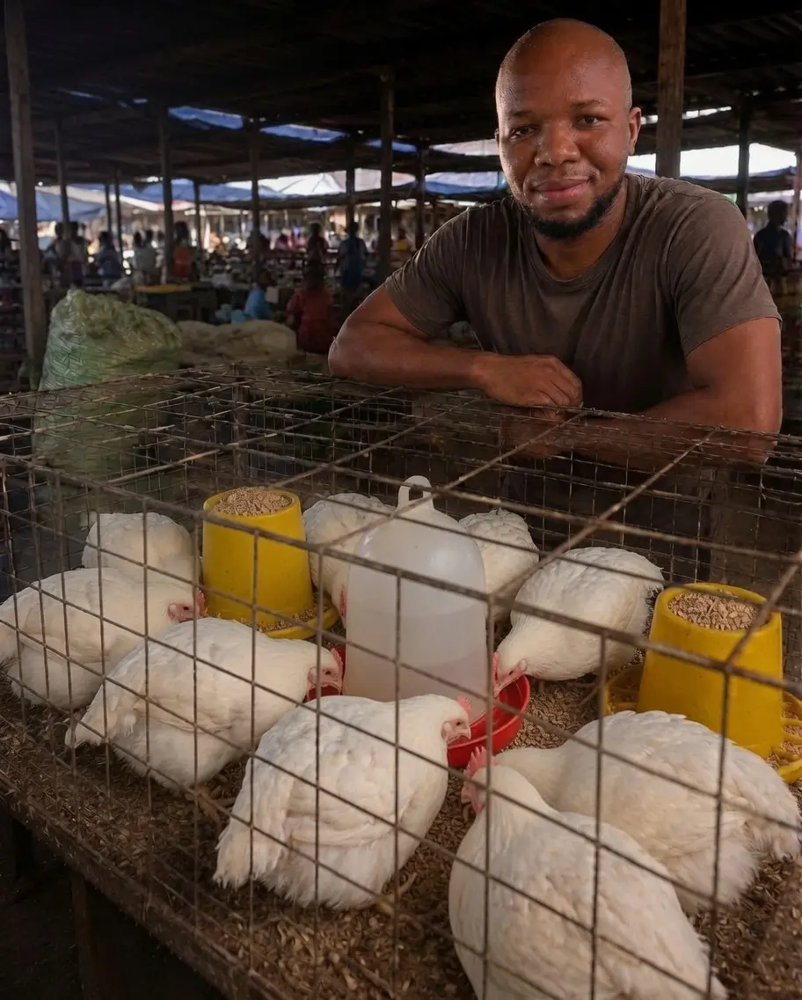

The poultry tip site
The poultry tip siteBroiler Marketing: Finding Buyers and Setting the Right Price
Marketing is one of the most important parts of broiler production. A farmer may raise healthy birds successfully, but still make a poor return if there is no clear plan for selling them. For this reason, marketing should begin before the chicks arrive, not when the birds are already ready for sale.
Marketing broilers
Start by identifying potential buyers in your area and learning what they want. Consider the preferred bird size, age, quantity, delivery arrangements, and price. Potential markets may include:
- Restaurants and hotels
- Shawarma and barbecue businesses
- Butchers and food retailers
- Cold rooms and poultry processors
- Open-market traders
- Event caterers
- Households and individual buyers
Do not depend on only one market. Building relationships with several buyers gives you more selling options and reduces the risk of being forced to accept a very low price when demand is weak. Contact potential buyers early, share photographs or videos of your birds when appropriate, and confirm their requirements before the birds reach market weight.
Social media can also support your marketing efforts. WhatsApp status updates, local farming groups, Facebook pages, and personal referrals can help you reach buyers directly. When advertising, provide useful details such as the number of birds available, approximate weight, expected sale date, location, and whether the birds are sold live or processed.
Timing is important. The longer birds remain on the farm after reaching their target weight, the more you spend on feed, medication, labour, and other operating costs. Delayed sales can reduce your profit, especially when demand is low. Plan your production cycle around confirmed or likely demand whenever possible.

Large-scale production can still be profitable even when the price per bird is low. A small profit on each bird becomes meaningful when multiplied across hundreds or thousands of birds. This approach works only when you already have reliable buyers, enough housing, feed, and working capital. Simply increasing flock size without these foundations can lead to bigger losses, not bigger profits.
Plan before production begins
Before buying chicks, research the local market and estimate the likely selling price. Compare this expected price with your projected production cost so you know, before you start, whether the cycle can be profitable at the prices buyers are currently paying.
Keep accurate records throughout the production cycle. Record the cost of chicks, feed, litter, medication, vaccines, utilities, transport, labour, mortality, and other expenses. These records will help you set a realistic price and determine whether the enterprise is profitable.
Calculating the cost of raising each bird
Your production cost should include both variable costs and an appropriate share of the cost of using your fixed equipment. Variable costs are expenses that change with the size of the flock. They may include the cost of chicks, feed, litter, vaccines, medication, water, electricity, labour, transport, and other supplies.
Fixed equipment also has a cost, even when it is not purchased for every production cycle. Examples include feeders, drinkers, heat sources, wires, and housing equipment. Allocate a reasonable depreciation charge to these items based on their useful life and expected usage.
Use the following formula:
Production cost per bird = (Total variable costs + depreciation) ÷ Number of birds raised
For example, if the total cost of a production cycle is ₦1,300,000 and you raise 100 birds, the production cost is ₦13,000 per bird. If you want to make ₦2,000 profit per bird, the starting selling price would be ₦15,000 per bird. This price should still be reviewed against current market demand, bird size, and the prices charged by competing producers.
Profit is not determined by the selling price alone. Controlling waste, preventing unnecessary mortality, buying inputs carefully, and selling at the right time can all improve your margin. Review your records after every cycle and use the results to make better production and marketing decisions.